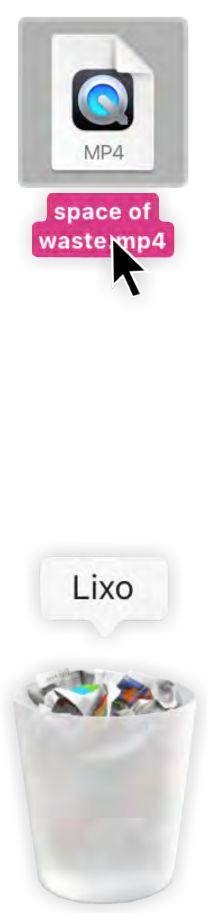

space of waste
animação stop-motion,
viena 2024.
Space of Waste é uma animação em stop-motion que retrata as salas do lixo em Viena. "Müllräume" (em alemão) são salas que existem em muitos prédios vienenses para albergar os contentores onde as pessoas depositam o seu lixo doméstico: espaços polarizadores, ricos em conceitos sociais intrigantes que se estendem para além da gestão de resíduos, profundamente entrelaçados com noções fundamentais de comunidade, privacidade e pertença. Entrar neles pode ser um confronto com os resultados do nosso consumo.
Trabalhando frame a frame, mergulhámos no tópico do lixo, olhando para estas salas como espaços simbólicos da forma como lidamos, emocional e fisicamente, com a matéria que produzimos, tanto enquanto indivíduos como enquanto cidade. "Os resíduos e as práticas de eliminação de resíduos contribuem para uma ordem estética que coloca não só as coisas, mas também os indivíduos, em escalas simbólicas de limpeza, valor e pertença." (Laura Moisi, 2016)
É crucial reconsiderar os espaços e sistemas que nos rodeiam, prestando atenção às mensagens que transmitem, quem está a ser ouvido e a quem é permitida o acesso. As salas de lixo, através do seu design, leis e regras, comunicam expectativas e moldam a relação dos vienenses com a limpeza.
Esperemos que a animação "Space of Waste" (e a minha tese de mestrado) continuem a conversa sobre Müllräume e sobre a forma como lidamos com o lixo.
Execução com Elisabeth Utz e Lukas Lex.
